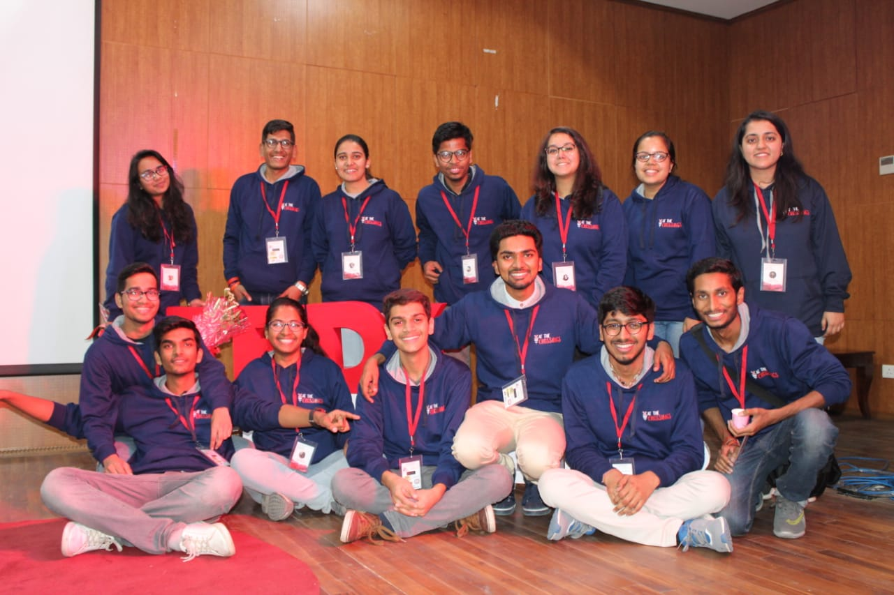

What is TED?

TED is a global community, welcoming people from every discipline and culture who seek a deeper understanding of the world. It believes passionately in the power of ideas to change attitudes, lives and, ultimately, the world. TED stands for Technology, Entertainment, and Design. This huge revolution began in 1984 as a conference, and as the time passed by, it covered almost every field of life science to business to global issues that were covered in more than 110 languages.
In taking the conference as a nonpartisan, nonprofit devoted to spreading ideas, usually in the form of short, subtle yet powerful enough talks, Anderson stood by the principles that made TED great: the inspired format, the breadth of content, the commitment to seek out the most interesting people on Earth and let them communicate their passion.TED conferences and events continue to inspire, motivate and thrill attendees.

What is TEDx?
TEDx was created in the spirit of TED's mission, "ideas worth spreading." It supports independent organizers who want to conduct TED-like events to enlighten their local community with thoughts to discover new ideas and provide platform to present them, are organized independently under a free license granted by TED.
TEDx MNIT Jaipur

4 years back, a prediction was made that TEDxMNITJaipur will become an annual ritiual for years to come! So it has been!
The elegant ship of TEDxMNITJaipur set forth its journey by 'Singing a Different Tune' in 2016. It learnt how daily things should be approached with a fresh and unique perspective. This might even bring to life a brand new opinion of one's life and he/she might end up enjoying it more each day!
After fighting the sea storms bravely, it came out alive 'At The Crossings' in 2018. The ship was taught the truth of the world. People had created many internal and external barriers and had been sailing the same voyage for years. The time had come to choose one's own path...It is our choices that define us..
It were the joyful spirits and hard-working nature of the sailors that led the ship through this enchanted journey. The ship had gained enough strength since then and awaits its very next harbour- 'Pop the bubble, explore the unseen'...